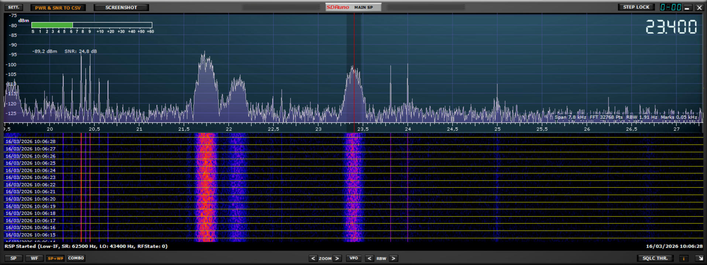
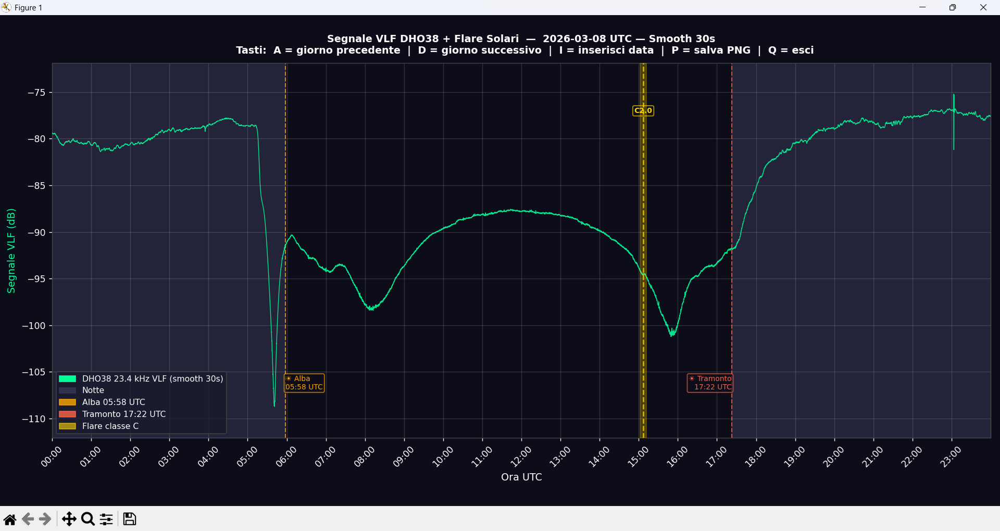
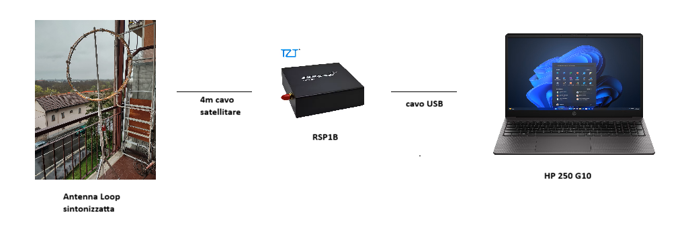
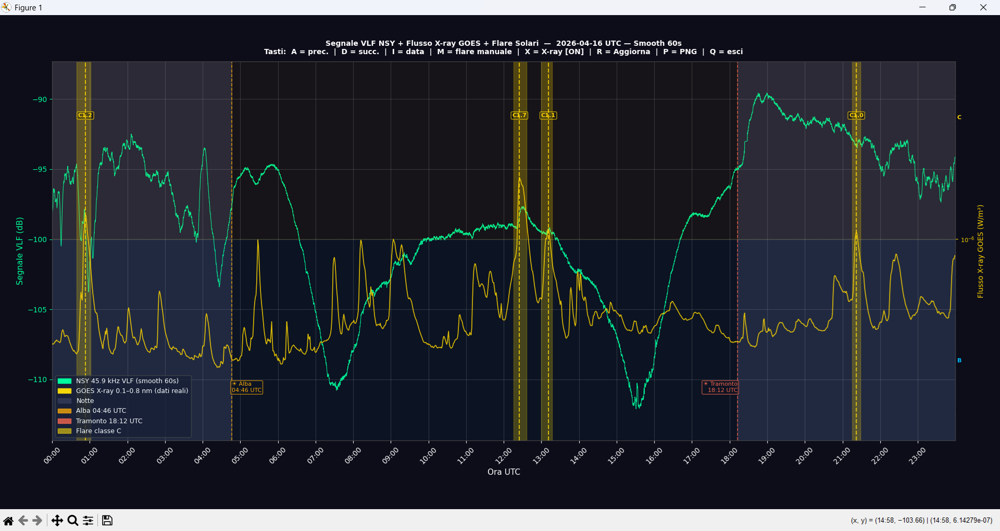
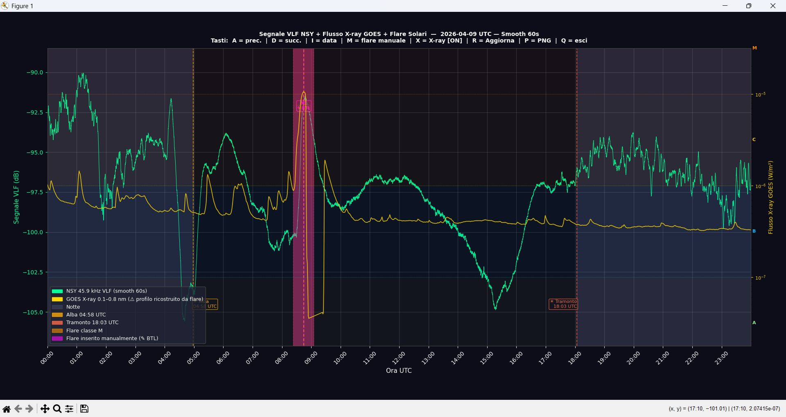
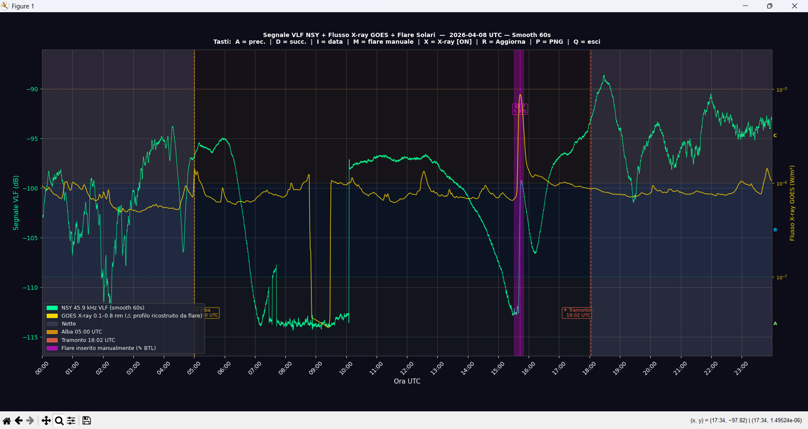
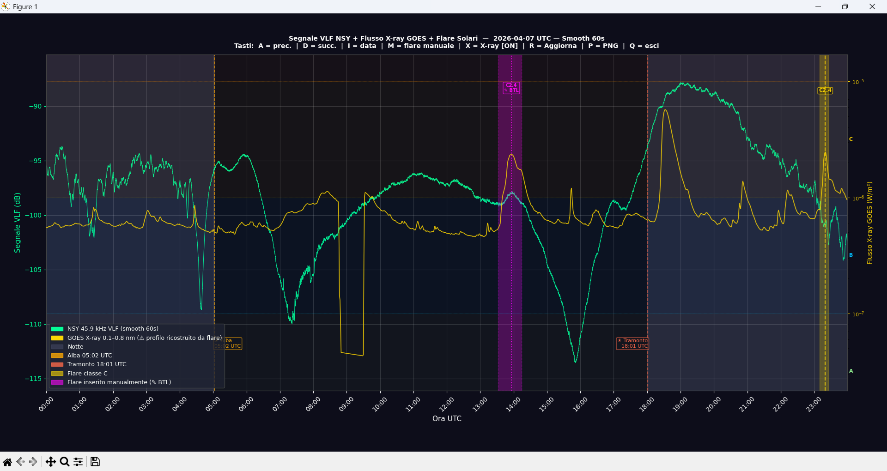
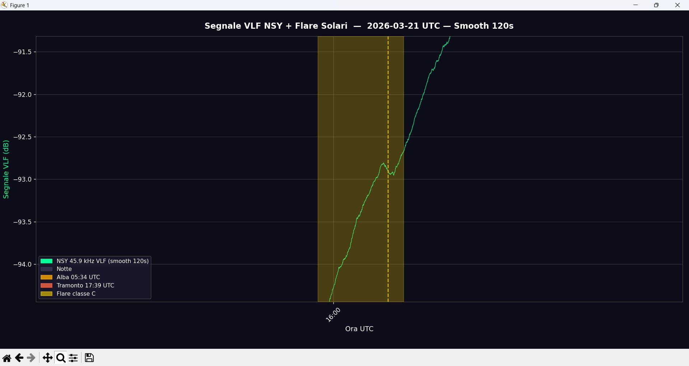

Cosa sono i SID
What are SIDs
I Sudden Ionospheric Disturbances (SID) sono perturbazioni improvvise della ionosfera terrestre causate dall'intensa radiazione ultravioletta e X emessa durante i brillamenti solari. Durante un brillamento, questa radiazione ionizza ulteriormente lo strato D della ionosfera, situato tra 60 e 90 km di quota, alterando le condizioni di propagazione delle onde radio a bassissima frequenza (VLF).
Le stazioni navali militari trasmettono continuamente segnali VLF per comunicare con i sottomarini. Questi segnali si propagano nella guida d'onda formata dalla superficie terrestre e dalla ionosfera: monitorando la variazione di ampiezza di questi segnali è possibile rilevare i SID e quindi indirettamente i brillamenti solari.
La stazione GAESID monitora due trasmettitori navali militari in banda VLF. Il trasmettitore DHO38, situato a Rhauderfehn in Germania, trasmette a 23,4 kHz con una potenza di 800 kW; la distanza da Torino è di circa 800 km. Il trasmettitore NSY, situato a Niscemi in Sicilia, trasmette a 45,9 kHz; la distanza da Torino è di circa 1200 km. Entrambi i percorsi sono sufficientemente lunghi da garantire la dominanza dell'onda di cielo necessaria per la rilevazione dei SID. Il monitoraggio attivo è attualmente su NSY, che offre maggiore stabilità del segnale grazie all'assenza quasi totale del contributo dell'onda di terra.

Spettro VLF acquisito dalla stazione GAESID — DHO38 chiaramente visibile a 23.4 kHz (linea rossa) con SNR 24.4 dB. A sinistra il segnale HWU (Rosnay, Francia) a 21.75 kHz, non utilizzato per il monitoraggio SID perché il percorso di soli ~650 km è dominato dall'onda di terra, che non risente delle perturbazioni ionosferiche causate dai brillamenti solari.
VLF spectrum acquired by the GAESID station — DHO38 clearly visible at 23.4 kHz (red line) with SNR 24.4 dB. On the left, the HWU signal (Rosnay, France) at 21.75 kHz, not used for SID monitoring because the short path of only ~650 km is dominated by the ground wave, which is unaffected by the ionospheric disturbances caused by solar flares.
Sudden Ionospheric Disturbances (SIDs) are sudden disturbances of the Earth's ionosphere caused by the intense ultraviolet and X-ray radiation emitted during solar flares. During a flare, this radiation further ionises the D layer of the ionosphere, located between 60 and 90 km altitude, altering the propagation conditions of very low frequency (VLF) radio waves.
Military naval stations continuously transmit VLF signals to communicate with submarines. These signals propagate in the waveguide formed by the Earth's surface and the ionosphere: by monitoring the amplitude variation of these signals it is possible to detect SIDs and therefore indirectly solar flares.
The GAESID station monitors two military naval transmitters in the VLF band. The DHO38 transmitter, located in Rhauderfehn, Germany, transmits at 23.4 kHz with a power of 800 kW; the distance from Turin is approximately 800 km. The NSY transmitter, located in Niscemi, Sicily, transmits at 45.9 kHz; the distance from Turin is approximately 1200 km. Both paths are long enough to ensure the sky wave dominance necessary for SID detection. Active monitoring is currently on NSY, which offers greater signal stability due to the near-total absence of ground wave contribution.

Andamento tipico del segnale DHO38 nelle 24 ore (2026-03-08). Di notte il segnale è alto e stabile grazie all'assenza dello strato D. All'alba (05:58 UTC) cade bruscamente di circa 20 dB con l'attivazione dello strato D. Durante il giorno segue una curva a campana con il massimo a metà giornata. Il flare C2.0 delle 15:00 UTC produce una caduta visibile del segnale. Al tramonto (17:22 UTC) il segnale risale rapidamente con la scomparsa dello strato D.
Typical DHO38 signal behaviour over 24 hours (2026-03-08). At night the signal is high and stable due to the absence of the D layer. At dawn (05:58 UTC) it drops sharply by about 20 dB as the D layer forms. During the day it follows a bell-shaped curve peaking at midday. The C2.0 flare at 15:00 UTC produces a visible signal drop. At sunset (17:22 UTC) the signal rises rapidly as the D layer disappears.
Strumentazione utilizzata
Equipment used

Schema della stazione GAESID: antenna loop sintonizzata collegata tramite cavo satellitare da 4m al ricevitore RSP1B, connesso via USB al laptop HP 250 G10.
GAESID station diagram: tuned loop antenna connected via 4m satellite cable to the RSP1B receiver, connected via USB to the HP 250 G10 laptop.
Loop ad aria da 85 cm di diametro con 50 spire di filo smaltato. Induttanza circa 9,3 mH, accordata.
Air-core loop 85 cm in diameter with 50 turns of enamelled wire. Inductance approximately 9.3 mH, tuned.
Ricevitore SDR a 14 bit con copertura da 1 kHz a 2 GHz. Utilizzato in modalità Low-IF con frequenza di campionamento 62,5 kHz centrata a 23,4 kHz.
14-bit SDR receiver covering 1 kHz to 2 GHz. Used in Low-IF mode with 62.5 kHz sample rate centred at 23.4 kHz.
Laptop con processore Intel Core i5-1334U, 16 GB RAM, Windows 11 Pro. Scelto per il basso livello di rumore elettromagnetico rispetto alla macchina precedente.
Laptop with Intel Core i5-1334U processor, 16 GB RAM, Windows 11 Pro. Chosen for its low electromagnetic noise level compared to the previous machine.
Specifiche tecniche antenna
Antenna technical specifications
| Tipo | Loop ad aria, costruzione artigianale |
| Diametro | 85 cm |
| Numero spire | 50 |
| Induttanza | ~9,3 mH |
| Posizione | Balcone esposto a sud, Torino |
| Prelievo segnale | Quinta spira (adattamento di impedenza) |
| Type | Air-core loop, handmade |
| Diameter | 85 cm |
| Number of turns | 50 |
| Inductance | ~9.3 mH |
| Position | South-facing balcony, Turin |
| Signal tap | Turn 5 (impedance matching tap) |
Software e flusso dei dati
Software and data flow
↓ vlf_converti.py
SDRuno_PWRSNR.csv ──── GAESID_DHO38_YYYY-MM-DD.csv
↓ vlf_visualizza.py / vlf_realtime.py / vlf_detrend.py
Grafico con flare NOAA Chart with NOAA flares
SDRuno
SDRuno
SDRuno è il software ufficiale di SDRplay per la gestione del ricevitore RSP1B. Viene configurato per campionare il segnale centrato sulla frequenza monitorata — attualmente NSY a 45,9 kHz — e registra ogni secondo la potenza e il rapporto segnale/rumore nel file SDRuno_PWRSNR.csv.
La banda passante di integrazione è di 70 Hz intorno alla frequenza target. Questo valore è stato scelto sperimentalmente per escludere le righe di rumore presenti nelle immediate vicinanze della portante, ottenendo una misura più stabile e un miglior rapporto segnale/rumore rispetto a bande più larghe.
SDRuno is the official SDRplay software for managing the RSP1B receiver. It is configured to sample the signal centred on the monitored frequency — currently NSY at 45.9 kHz — and records the signal power and signal-to-noise ratio every second in the file SDRuno_PWRSNR.csv.
The integration bandwidth is 70 Hz around the target frequency. This value was chosen experimentally to exclude noise lines present immediately adjacent to the carrier, yielding a more stable measurement and better signal-to-noise ratio compared to wider bandwidths.
Script Python
Python Scripts
Il sistema utilizza cinque script Python sviluppati specificamente per questo progetto, tutti disponibili su questo repository:
vlf_converti.py ↓ — Avviato una volta sola, rimane in esecuzione continua e converte in tempo reale i dati prodotti da SDRuno creando un file CSV giornaliero compatibile con lo standard SuperSID, con nome nella forma GAESID_DHO38_2026-03-16.csv. SDRuno accumula tutti i dati nel suo file SDRuno_PWRSNR.csv senza distinzione di giorno; questo script legge quel file e produce automaticamente un file separato per ogni giorno UTC. Alla mezzanotte UTC crea in automatico il file del nuovo giorno e continua la registrazione senza interruzioni.
vlf_recupera.py ↓ — Recupera dati storici dai file SDRuno_PWRSNR archiviati, con ricerca intelligente basata sulla data di creazione dei file per evitare scansioni complete.
vlf_visualizza.py ↓ — Visualizza il grafico del segnale VLF sovrapposto ai dati dei brillamenti solari scaricati in tempo reale dalle API NOAA e NASA DONKI. Permette la navigazione tra i giorni con i tasti A/D e il salvataggio dei grafici.
vlf_realtime.py ↓ — Visualizza in tempo reale il segnale VLF acquisito dalla stazione, aggiornando il grafico a intervalli configurabili dall'utente (default 5 minuti). Ad ogni aggiornamento scarica i dati flare aggiornati da NOAA e salva automaticamente un PNG del grafico corrente.
vlf_detrend.py ↓ — Rimuove il trend lento della variazione ionosferica giornaliera dal segnale VLF, evidenziando le variazioni rapide causate dai brillamenti solari. Utilizza due metodi: baseline locale con esclusione automatica dei flare (metodo predefinito, ottimale per flare di classe C) e media mobile globale. Il grafico mostra il segnale originale con la baseline stimata nel pannello superiore e il segnale detrendato nel pannello inferiore.
The system uses five Python scripts developed specifically for this project, all available on this repository:
vlf_converti.py ↓ — Launched once, it runs continuously and converts SDRuno data in real time, creating a daily CSV file compatible with the SuperSID standard, named in the form GAESID_DHO38_2026-03-16.csv. SDRuno accumulates all data in its SDRuno_PWRSNR.csv file regardless of day; this script reads that file and automatically produces one separate file per UTC day. At UTC midnight it automatically creates the new day file and continues recording without interruption.
vlf_recupera.py ↓ — Recovers historical data from archived SDRuno_PWRSNR files, with intelligent search based on file creation dates to avoid full scans.
vlf_visualizza.py ↓ — Displays the VLF signal chart overlaid with solar flare data downloaded in real time from the NOAA and NASA DONKI APIs. Allows navigation between days with A/D keys and chart saving.
vlf_realtime.py ↓ — Displays the VLF signal acquired by the station in real time, updating the chart at user-configurable intervals (default 5 minutes). At each update it downloads the latest flare data from NOAA and automatically saves a PNG of the current chart.
vlf_detrend.py ↓ — Removes the slow trend of the daily ionospheric variation from the VLF signal, highlighting the rapid variations caused by solar flares. Uses two methods: local baseline with automatic flare exclusion (default method, optimal for class C flares) and global moving average. The chart shows the original signal with the estimated baseline in the upper panel and the detrended signal in the lower panel.
Lo Smoothing del Segnale
Signal Smoothing
Il segnale VLF campionato ogni secondo presenta variazioni rapide di ampiezza dovute al rumore del ricevitore e ai disturbi elettromagnetici locali. Per rendere più leggibile il grafico e facilitare l'identificazione dei SID viene applicato uno smoothing tramite il filtro di Savitzky-Golay, che attenua le fluttuazioni rapide preservando la forma e l'ampiezza dei picchi degli eventi.
La finestra di smoothing è configurabile dall'utente in secondi. Finestre più ampie producono curve più lisce ma attenuano i dettagli rapidi degli eventi; finestre più strette preservano meglio la forma del SID ma lasciano più rumore visibile.
Per il monitoraggio dei SID si consigliano finestre di 20-30 secondi: sufficienti ad attenuare il rumore impulsivo mantenendo la risoluzione temporale necessaria per seguire l'evoluzione del brillamento, che tipicamente dura da pochi minuti a qualche decina di minuti. Finestre troppo ampie come 300-600 secondi appiattiscono i SID di classe C rendendoli difficilmente distinguibili dalla baseline.
The VLF signal sampled every second shows rapid amplitude variations due to receiver noise and local electromagnetic interference. To make the chart more readable and facilitate SID identification, smoothing is applied using the Savitzky-Golay filter, which attenuates rapid fluctuations while preserving the shape and amplitude of event peaks.
The smoothing window is user-configurable in seconds. Wider windows produce smoother curves but attenuate rapid event details; narrower windows better preserve the SID shape but leave more visible noise.
For SID monitoring, windows of 20-30 seconds are recommended: sufficient to attenuate impulsive noise while maintaining the temporal resolution needed to follow the evolution of the flare, which typically lasts from a few minutes to several tens of minutes. Excessively wide windows such as 300-600 seconds flatten class C SIDs making them difficult to distinguish from the baseline.
Il Detrending del Segnale VLF
VLF Signal Detrending
Il segnale VLF grezzo presenta una lenta variazione giornaliera di ampiezza dovuta al ciclo giorno/notte della ionosfera: il segnale è massimo a metà giornata e minimo di notte, con variazioni tipiche di 10-15 dB nell'arco delle 24 ore. Questa variazione lenta maschera le variazioni rapide causate dai brillamenti solari, in particolare quelle di piccola entità prodotte dai flare di classe C.
Il detrending consiste nel sottrarre al segnale questa variazione lenta stimata (la baseline), ottenendo un segnale residuo centrato sullo zero che evidenzia solo le deviazioni rapide dalla norma. Un SID appare nel segnale detrendato come un picco positivo o negativo chiaramente visibile, anche quando nel segnale grezzo sarebbe quasi invisibile.
Lo script utilizza due metodi. Il metodo locale stima la baseline interpolando linearmente tra due zone di segnale pulito ai lati di ogni flare, escludendo automaticamente la durata del flare stesso dal calcolo. È il metodo più accurato per i flare di classe C perché tiene conto della pendenza locale del segnale. Il metodo globale usa una media mobile centrata sull'intera giornata ed è più semplice ma meno preciso in presenza di flare ravvicinati.
The raw VLF signal shows a slow daily amplitude variation due to the day/night cycle of the ionosphere: the signal is maximum at midday and minimum at night, with typical variations of 10-15 dB over 24 hours. This slow variation masks the rapid variations caused by solar flares, particularly the small ones produced by class C flares.
Detrending consists of subtracting this estimated slow variation (the baseline) from the signal, obtaining a residual signal centred on zero that highlights only rapid deviations from the norm. A SID appears in the detrended signal as a clearly visible positive or negative peak, even when it would be almost invisible in the raw signal.
The script uses two methods. The local method estimates the baseline by linearly interpolating between two clean signal zones on either side of each flare, automatically excluding the flare duration from the calculation. It is the most accurate method for class C flares because it accounts for the local signal slope. The global method uses a moving average centred on the entire day and is simpler but less precise in the presence of closely spaced flares.
Per supportare il monitoraggio di NSY è disponibile una versione aggiornata dello script di visualizzazione, che include in overlay il flusso X-ray GOES scaricato direttamente dai server NOAA:
vlf_visualizza_nsy_v2.py ↓ — Versione aggiornata dello script di visualizzazione, adattata per NSY a 45.9 kHz. Introduce l'overlay del flusso X-ray GOES sul grafico del segnale VLF (tasto X per attivare/disattivare), con asse destro logaritmico e fasce colorate per le classi A/B/C/M/X. Questa sovrapposizione permette un'analisi avanzata dei SID, rendendo possibile correlare la pendenza e l'intensità del segnale VLF con l'andamento reale del flusso X. I dati dei flare NOAA vengono salvati automaticamente in un file JSON locale nella cartella Flares: nelle sessioni successive lo script legge direttamente la cache senza collegarsi a internet, ad eccezione del giorno corrente per cui scarica sempre i dati aggiornati. Allo stesso modo i dati X-ray GOES vengono salvati in cache locale nella cartella XRAY. Aggiunge il tasto R per forzare l'aggiornamento manuale di grafico, flare e X-ray.
To support NSY monitoring, an updated version of the visualisation script is available, including a GOES X-ray flux overlay downloaded directly from NOAA servers:
vlf_visualizza_nsy_v2.py ↓ — Updated version of the visualisation script, adapted for NSY at 45.9 kHz. It introduces a GOES X-ray flux overlay on the VLF signal chart (key X to toggle), with a logarithmic right axis and colour-coded bands for A/B/C/M/X classes. This overlay enables a deeper analysis of SIDs, allowing the user to correlate VLF signal slopes and intensities with the actual X-ray flux profile. NOAA flare data is automatically saved to a local JSON file in the Flares folder: in subsequent sessions the script reads directly from the cache without connecting to the internet, except for the current day for which updated data is always downloaded. Similarly, GOES X-ray data is cached locally in the XRAY folder. Adds key R to force manual refresh of chart, flares and X-ray data.
{kind=link}

Esempio
dell'overlay X-ray GOES implementato nello script.
Nell'immagine è visibile un Flare C1.7
Example of the GOES X-ray overlay implemented in the script. A C1.7 flare is visible in the image
{kind=link}

Esempio
dell'overlay X-ray GOES implementato nello script.
Nell'immagine è visibile un Flare M1.06
Example of the GOES X-ray overlay implemented in the script. A M1.06 flare is visible in the image.
{kind=link}

Esempio
dell'overlay X-ray GOES implementato nello script.
Nell'immagine è visibile un Flare C8.7
Example of the GOES X-ray overlay implemented in the script. A C8.7 flare is visible in the image.
{kind=link}

Esempio
dell'overlay X-ray GOES implementato nello script.
Nell'immagine è visibile un Flare C2.4
Example of the GOES X-ray overlay implemented in the script. A C2.4 flare is visible in the image.
Brillamenti Solari Rilevati
Solar Flares Detected
La stazione è operativa da marzo 2026. Con il monitoraggio di DHO38 (23,4 kHz) la soglia di rilevazione era stimata intorno alla classe C5-C6. Dal passaggio a NSY (45,9 kHz) la soglia è scesa significativamente: il primo risultato ottenuto è la rilevazione di un flare C1.1 il 21 marzo 2026, con una variazione di ~0,2 dB sul segnale smoothed a 120 secondi.
The station has been operational since March 2026. With DHO38 monitoring (23.4 kHz) the detection threshold was estimated at around class C5-C6. Since switching to NSY (45.9 kHz) the threshold has dropped significantly: the first result obtained is the detection of a C1.1 flare on 21 March 2026, with a variation of ~0.2 dB on the 120-second smoothed signal.
| Date UTC | Class | Peak UTC | ΔdB | Note / Notes |
|---|---|---|---|---|
| 2026-03-13 ↗ | C8.0 | ~15:30 | −15 dB | Chiaramente rilevato / Clearly detected |
| 2026-03-14 ↗ | C2.1 | ~12:45 | ~2 dB | Al limite / At threshold |
| 2026-03-16 ↗ | M2.7 + C5.9 | ~12:15 / ~14:45 | ~2 dB / ~5 dB | Ionosfera perturbata Kp=3.3 / Perturbed ionosphere |
| 2026-03-21 ↗ | C1.1 | ~16:00 | ~0.2 dB | NSY 45.9 kHz · Smooth 120s / NSY 45.9 kHz · 120s smooth |
Sviluppi e aggiornamenti
Developments and updates
L'analisi dei dati raccolti nelle prime settimane di operatività ha evidenziato un limite intrinseco del percorso Torino–DHO38 a 23,4 kHz. Su questo percorso di circa 800 km l'onda di terra, pur molto attenuata, è ancora sufficientemente presente da interferire con l'onda di cielo. Questa interferenza produce fenomeni di cancellazione e rinforzo del segnale in certi momenti della giornata, rendendo difficile l'interpretazione dei SID che avvengono in quelle finestre orarie.
Un esempio concreto si è verificato il 16 marzo 2026, quando un flare di classe M2.7 ha prodotto un SID quasi invisibile, mentre un successivo flare C5.9, avvenuto tre ore dopo con un flusso X circa cinque volte inferiore, ha dato una risposta significativamente più pronunciata. L'analisi ha mostrato che il flare C5.9 è arrivato esattamente durante un minimo naturale del segnale causato dall'interferenza distruttiva tra onda di terra e onda di cielo, amplificando la risposta ionosferica. Il flare M2.7 invece aveva colpito il percorso durante la fase di plateau, dove la sensibilità alle variazioni è minore.
Per superare questo limite, la stazione è stata risintonizzata per monitorare NSY, il trasmettitore navale americano di Niscemi (Sicilia), che opera a 45,9 kHz. Il percorso Torino–Niscemi di circa 1200 km, combinato con la frequenza più elevata, elimina praticamente il contributo dell'onda di terra. Il segnale ricevuto è quasi esclusivamente onda di cielo, il che rende il comportamento del segnale più stabile e prevedibile e i SID più proporzionali all'intensità del flare che li ha generati.
La sintonia dell'antenna a 45,9 kHz è stata ottenuta collegando in parallelo all'induttore un condensatore fisso da 680 pF e un condensatore variabile da 570 pF, per un totale di circa 1250 pF. La combinazione fisso+variabile permette di regolare con precisione la frequenza di risonanza e di compensare le piccole variazioni di induttanza al variare della temperatura.
Il primo risultato concreto su NSY è la rilevazione di un flare C1.1 il 21 marzo 2026, con una variazione di circa 0,2 dB sul segnale smoothed a 120 secondi. Si tratta di un evento di piccola entità, normalmente al di sotto della soglia di rilevazione della configurazione precedente su DHO38, chiaramente visibile grazie alla maggiore stabilità del percorso Torino–Niscemi.

Rilevazione del flare C1.1 del 21 marzo 2026 sul segnale NSY 45,9 kHz. La variazione di ~0,2 dB è chiaramente visibile sul segnale smoothed a 120 secondi, nonostante la piccola entità del flare.
Analysis of data collected during the first weeks of operation has revealed an intrinsic limitation of the Turin–DHO38 path at 23.4 kHz. Over this approximately 800 km path, the ground wave, although highly attenuated, is still sufficiently present to interfere with the sky wave. This interference produces signal cancellation and reinforcement phenomena at certain times of day, making it difficult to interpret SIDs occurring during those time windows.
A concrete example occurred on 16 March 2026, when a class M2.7 flare produced an almost invisible SID, while a subsequent C5.9 flare, occurring three hours later with an X-ray flux approximately five times lower, gave a significantly more pronounced response. Analysis showed that the C5.9 flare arrived exactly during a natural signal minimum caused by destructive interference between the ground wave and sky wave, amplifying the ionospheric response. The M2.7 flare, on the other hand, had struck the path during the plateau phase, where sensitivity to variations is lower.
To overcome this limitation, the station has been retuned to monitor NSY, the American naval transmitter at Niscemi (Sicily), operating at 45.9 kHz. The Turin–Niscemi path of approximately 1200 km, combined with the higher frequency, virtually eliminates the ground wave contribution. The received signal is almost exclusively sky wave, making signal behaviour more stable and predictable and SIDs more proportional to the intensity of the generating flare.
The antenna was tuned to 45.9 kHz by connecting a fixed 680 pF capacitor and a variable 570 pF capacitor in parallel across the inductor, for a total of approximately 1250 pF. The fixed+variable combination allows precise adjustment of the resonance frequency and compensation for small inductance variations with temperature.
The first concrete result on NSY is the detection of a C1.1 flare on 21 March 2026, with a variation of approximately 0.2 dB on the 120-second smoothed signal. This is a small event, normally below the detection threshold of the previous DHO38 configuration, clearly visible thanks to the greater stability of the Turin–Niscemi path.
Detection of the C1.1 flare of 21 March 2026 on the NSY 45.9 kHz signal. The ~0.2 dB variation is clearly visible on the 120-second smoothed signal, despite the small magnitude of the flare.